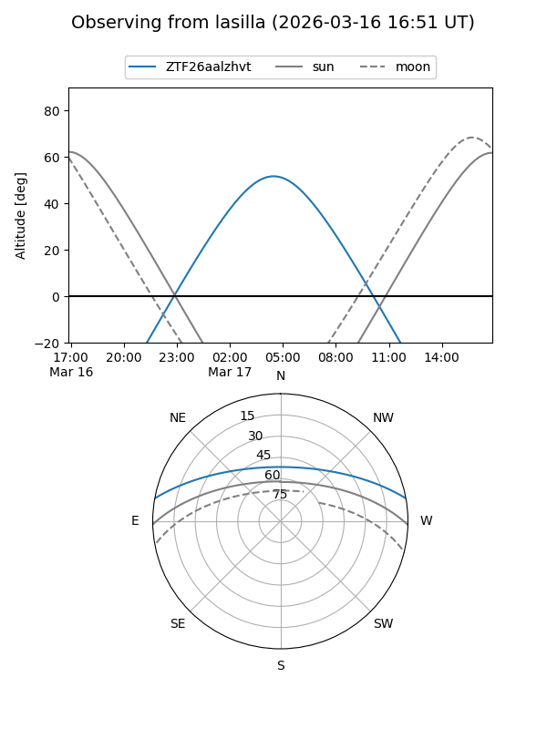
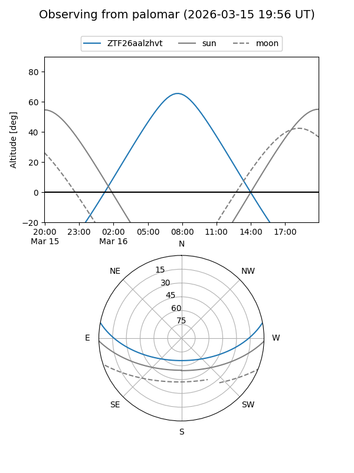

ZTF26aalzhvt
Target ZTF26aalzhvt at 2026-03-16 11:55
Aliases and brokers:
FINK: link
Lasair: link
ALeRCE: link
alt names
ZTF26aalzhvt (ztf,fink_ztf)
Coordinates:
equatorial (ra, dec) = 170.8203,+9.14479
equatorial (HMS+DMS) = 11:23:16.87,+09:08:41.24
galactic (l, b) = (249.6026,+62.49103)
Flags:
Photometry:
last ztfg=18.15
1 ztfg detections
Lightcurve
Visibility


Additional plots